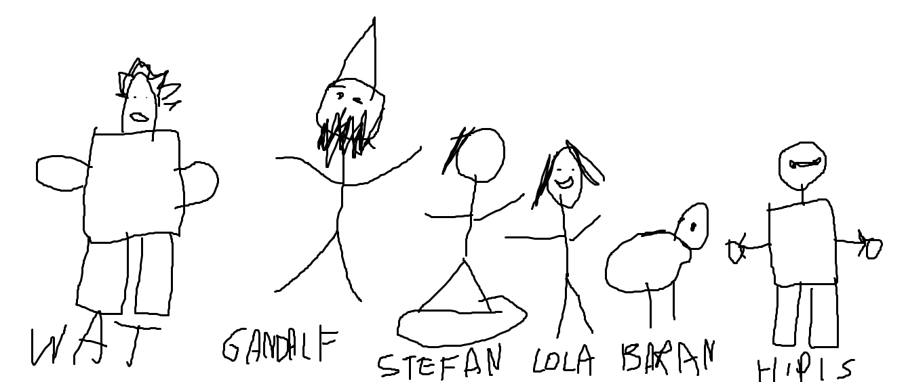
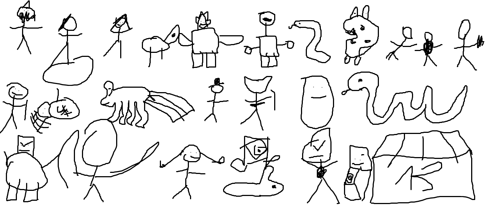

GANDALF STYLE - O NAS I HISTORIA
Gandalf? A co to jest???
Niektórzy, choć mało ich jest, zadają sobie to pytanie.
Gdzie znaleźć odpowiedź? Tu ją znajdziesz.
A więc.
Nie tak dawno temu, za lasami, za żółwiami bożydarami, żyła sobie żyła i szkoła.
O! Był tam też uczeń Adam Kacperski. Zachorował na dziwną chorobę - plackomanię.
Placki zawładnęły jego umysłem, a ponieważ czytał dużo książek, to plackomania musiała wybrać książkę, która by pomagała w dziwaczeniu Adama.
I słowo się rzekło, albowiem Adam najbardziej lubił książkę ,,Władca Pierścieni".
I się zaczeło.
Po całej klasie cały czas było słychać "lubie placki", "PLACKI", "GANDALF!" i słynne "You Shall Not Pass!".
Właśnie na wzór Gandalfa, wcale nikomu nie znany Adam Skorupski przeistoczył słowo w patyczaka z czapką, brodą i kijkami.
Ponieważ Adam Kacperski na przyrodzie wyszukał obrazek z napisem "Gandalf Style", tak i została zatytułowana seria komiksów, która do dziś nazywa się Gandalf Style.
Ok, ale to przeszłość. JAK TERAZ WYGLĄDA GANDALF STYLE???
Otóż nad Gandalfem teraz zapanowały dwa i pół osoby:
- Dominik Mandes
- Adam Kacperski
- Adam Skorupski - ale tylko w połowie!
Adam Skorupski w połowie?
Zadajecie sobie pytanie - czemu Adam S. tylko w połowie? Przecież to on przeistoczył Gandalfa w bazgrołki!
Otóż według umowy która jest w koszu - Adam wypisał się z Gandalfa.
Ale spokojnie, nie idźcie w kierunku okna - jest za zimno :) - Adam nadal współpracuje i tworzy Gandalfa, ale nie tworzy komiksów.
Co teraz robi?
Na przykład - pisze tę stronę (siemka :D). Ale nie tylko to. Podrzuca pomysły, inspiruje, zajmuje się sprawami publicznymi.
Więc nie mówcie "CZEMUU", bo nadal jest, ale w połowie.
Ale... kto teraz rządzi?
Teraz rządzi... Dominik!
Co się teraz dzieje z Gandalfem?
Otóż nowy przewodnik - Dominik - Przepisuje wszystkie dotychczas zrobione komiksy i tomy do wielkiej księgi Gandalfa.
Stan, gdy pisze się ten tekst, jest 30 odcinków i 3 tomy.
Przepis na Gandalfa
Otóż cały Gandalf Style jest robiony z nudów zbieranych z tajemnego słoika z kiszonymi ogórkami.
Kiszone ogórki są częścią Gandalfa. Cały Gandalf żyje kiszonymi ogórkami.
Ogórki są wypełniane Puszką Pandory EXTRA z dodatkiem placków i pierogów.
Raz na godzinę ogórki zaczynają mówić 1000 słów czyli "Rafaello".
Po przemówieniu ogórków ten który najszybciej powiedział 1000 słów jest spłaszczony i farbowany na kolor plackowy,
a ten który najwolniej powie - zostaje pierogiem.
Pieróg jest faszerowany:
- Kijkami
- Brodą
- Kapeluszem
- Patykami
- Głową
Po nafaszerowaniu pieroga pieróg zostaje owinięty w placka.
Taka oto "tortilla" jest wkładana do pieca nastawionego na 1000 stopni Celsjusza.
Nad całym procesem tworzenia komiksów czuwa T-Rex.
Po X godzinach tortilla powinna mówić: "A gdzie dżem?".
Wyjmujemy naszą tortillę.
Sprawdzamy czy T-Rex jest w pobliżu.
Jeśli jest bierzemy placka do pokoju nr 13, a następnie położyć na tortilli kaczkę, gęś, 2 kulki, jedną armatkę, długopis i kartkę.
Wołamy T-Rex'a do pokoju i uciekamy jak najwolniej i wchodzimy do pokoju nr. 7 sprawdzić, czy nowe ogórki nie zaczęły mówic "Rafaello" czyli 1000 słów.
T-Rex Azor
T-Rex Azor to dinozaur który nadużył aguzabuzapuzalaniny.
Jest on strażnikiem, pół kurą pół dinozaurem i perkusją czasu.
Azor to też uczeń mój i Dominika. Mieszkał w miejscowości Pułtusk na ulicy Niefajnej w hotelu blisko morza w możu.
Dzisiaj tworzy Gandalfa jedząc tortillę Gandalfową.
A jak nie wiecie - tortilla Gandalfowa jest toksyczna i tylko T-Rex może ją jeść (rano podjada ją WAT ale dobra).
Gdzie znaleźć Gandalfa?
- W Petronelce
- W Żabce
- W morzu w możu
- W szkole
- U Azora w żołądku
- U Dominikando
- W Internecie (za dwa lata)
Główni Bohaterowie

WAT
Wróg Gandalfa jeden z najwytrwalszych, nigdy się nie poddaje
Zawsze wstaje choć ranny ma dziwne pomysły i
robi szystko by pokonć Gandalfa
Gandalf
Najważniejsza postać. Uratowł Lolę i razem przżywają różne przygod
Stefan
Jeden z posłuszników Barana, nie jest zaawansowany jak Wat, ale
sprawia wiele trudnoci Gandalfowi
Lola
Żona Gandalfa, pojawia się pierwszy raz w odc. 18.
Baran
Wróg Gandalfa, pojawia się pierwszy raz w odc. 13.
Hipis
Też wróg Gandalfa, pojawia się pierwszy raz w odc. 14.
Inni bohaterowie

Gandalf, Stefan, Lola, Baran, WAT, hipis, Wonsz, Żabka, Krzywik i Fartuszek ( pomocnicy Barana ), Richard
człowiek z kijkiem, pajęczyca, ośmionożec, Glandi Parad, ninja pieróg, GIGA Placek, TATA Wensza
Biczos, Wielki potwór, Zenona, kapeć królik i wielki portal, Kartofel, Toaleta, HOTEL 13
Rafaello, czyli 1000 słow w jednym
Jest to jeden z ważniejszych etapów tworzenia Gandalfa. Ogórki muszą powiedzieć jak najszybciej 1000 słow, czyli Rafaello.
Wszystkie ogórki mają Rafaello w genach, i marzą wręcz o kokosach.
Ogórki muszą być 24/7 karmione chociaż jednym Rafaello, lub 1000 słowami.
W przeciwnym razie wygra Puszka Pandory EXTRA i wybuchną, ponieważ nie przeczytali regulaminu.
OGÓRKI NIE POWINNY SPOŻYWAĆ MORZA W MOŻU I APAPU GDYŻ KAŻDY LEK MOŻE WYWOŁAĆ AFRONEZJĘ OGÓRKÓW I BĘDĄ ONE TAŃCZYĆ TAK JAK W BAŁKANICY.
JEŻ ELI OGÓRKI SPOŻYŁY TABLETKĘ NALEŻY ZAWOŁAĆ AZORA Z KOLOROWĄ TABLETKĄ O KOLORZE FAJNYM Z NIEFAJNYM PATYKIEM GANDALFA.
KAŻDY OGÓREK NIE MOŻE BYĆ SPOŻYWANY PRZEZ T-REXA, WATA, CIEBIE, CIEBIE, I CIEBIE TEŻ, PO NIEWAŻ SPACJE W TYM TEKŚCIE ZAWIERAJĄ ZA DUŻO SPACJI WSZELAKIEGO MOŻA W MORZU I ODWROTNIE.
JEŻELI OGÓREK NIE POWIEDZIAŁ "RAFAELLO" LUB 1000 SŁÓW POWINIEN BYĆ ZABRANY DO DOMINIKANDO LUB DO GANDALFA!!!
NIE NALEŻY TAKŻE NADUŻYĆ RAFAELLO Z PUSZKĄ PANDORY GDYŻ WEDŁUG KODEKSU ŻÓŁWIA BOŻYDARA JEST TO PRAWDA ŻE NIE LUBIĘ PLACKÓW.
Dziękujemy za przeczytanie tego dokumentu! :)
Chcesz poznać okrutną prawdę na temat tego tekstu? To kliknij i scrolluj w dół.
1. Puszka Pandory należy do EFS.
2. APAP nie należy do nas.
3. Strona została stworzona dla rozrywki.
4. You Shall Not Pass!
5. Tekst należy czytać z przymrużeniem oka.
6. Żółw Bożydar należy do Robusiowej Ortografii, która do nas nie należy.
Smutne?